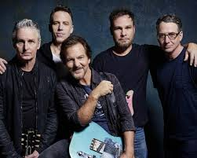

Pearl Jam
Pearl Jam é uma banda norte-americana de rock grunge, formada em 1990 em Seattle, Washington. Desde sua origem, é formada por Eddie Vedder, Jeff Ament, Stone Gossard e Mike McCready, passou por mudanças na bateria, sendo Matt Cameron, que também compõe o Soundgarden, o atual baterista da banda.
Saber Mais